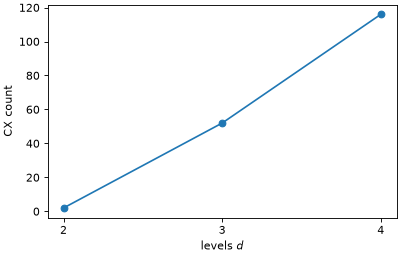

Transpile bosonic circuits¶
This guide explains how to transpile a BosonicCircuit to a standard
QuantumCircuit. A bosonic circuit carries no truncation, no encoding, and no
qubit count (see Work with bosonic circuits), so the transpiler is where those choices are
made. The truncation and the encoding are described by a LevelSpec
(see Describe the truncation with a LevelSpec), and the mapper that turns operators into qubit operators is
described in Map operator representations. The result is an ordinary
QuantumCircuit, so any Qiskit-compatible simulator can run it.
The guide uses one small example throughout: two bosonic modes, a state with one boson in each, and a single time evolution under a Bose-Hubbard Hamiltonian whose bond and on-site terms are in separate groups (see Group operator terms: use the operator structure):
>>> from qiskit_bosons.circuit import BosonicCircuit
>>> from qiskit_bosons.circuit.library import Evolution, InitializeModes
>>> from qiskit_bosons.operators import BosonOperator, ann, cre
>>>
>>> terms = {(cre(0), ann(1)): -1.0, (cre(1), ann(0)): -1.0}
>>> terms.update({(cre(mode), cre(mode), ann(mode), ann(mode)): 0.5 for mode in range(2)})
>>> hamiltonian = BosonOperator.from_dict(terms)
>>> # the bond is group 0 and the on-site interaction is group 1; derive the index from the term,
>>> # because the stored order of a dictionary is not specified
>>> hamiltonian.groups = [
... 0 if len({mode for _, mode in term}) == 2 else 1 for term, _ in hamiltonian.iter_terms()
... ]
>>>
>>> circuit = BosonicCircuit(2)
>>> circuit.append(InitializeModes([1, 1]), circuit.modes)
>>> circuit.append(Evolution(2, hamiltonian, time=0.1), circuit.modes)
>>> dict(circuit.count_ops())
{'InitializeModes': 1, 'Evolution': 1}
Transpilation stages¶
As explained in qiskit_bosons.transpiler, the preset pass managers in this package split the
transpilation into the following stages:
- Input
Converts the circuit to a directed acyclic graph (DAG) data structure, the representation that every later pass works on.
- Optimization
Keeps the circuit in bosonic space. These passes use the structure of the bosonic operators, in particular their groups, while no qubit information exists yet.
B2BSynthesisis the pass that breaks gates down here, with a plugin for each type of gate: a product formula or qDRIFT for anEvolution, and the Clements mesh for aModeRotation(see Synthesize an Evolution gate in bosonic space for how a method is chosen).RelabelModesreorders the modes. The preset decomposes mode rotations in this stage and leaves everything else as it is.- Layout
Maps each bosonic mode register to a quantum register. A bosonic mode generally occupies several qubits (\(d\) of them under the unary encodings, \(\lceil \log_2 d \rceil\) under the compact ones), so the quantum register is wider than the mode register.
OccupationB2QLayoutderives the register width from aLevelSpec.- Synthesis
Converts bosonic gates to qubit operations, one plugin per gate type. Encoding happens in this step: the plugin for an
Evolutiongate maps its operator to a qubit operator, and the plugin for anInitializeModesgate sets the qubits that encode each occupation. A barrier is carried onto every qubit of each register it touched.- Qubit
Transpiles the resulting qubit circuit with Qiskit’s own methods, for example to a basis gate set or a device. The preset always includes it; by default it is Qiskit’s preset pass manager, which synthesizes every evolution into gates (see Continue on the qubit level).
- Output
Converts the internal DAG data structure back to a
QuantumCircuit.
The truncation and the encoding are not stored in the circuit. They are given to the transpiler,
and the layout, the state preparation, and the mapper must all agree on them. The preset ensures
that by handing the same LevelSpec to all three.
A practical example¶
generate_preset_occupation_pass_manager() builds the pipeline from a spec. Lowering the
example under two encodings only changes the spec. The preset ends in Qiskit’s own qubit-level
transpilation, which would synthesize the evolution into gates. To see the circuit exactly as the
bosonic stages emit it, empty that stage first:
>>> from qiskit.transpiler import PassManager
>>> from qiskit_bosons.mappers import LevelSpec
>>> from qiskit_bosons.transpiler.presets import generate_preset_occupation_pass_manager
>>>
>>> for encoding in ("unary_unprojected", "gray"):
... pass_manager = generate_preset_occupation_pass_manager(LevelSpec(2, encoding))
... pass_manager.qubit = PassManager()
... lowered = pass_manager.run(circuit)
... print(f"{encoding:18s} qubits={lowered.num_qubits} ops={dict(lowered.count_ops())}")
unary_unprojected qubits=6 ops={'x': 2, 'PauliEvolution': 1}
gray qubits=4 ops={'x': 2, 'PauliEvolution': 1}
The two encodings use six and four qubits respectively (three levels per mode under the unary
encoding, two qubits per mode under the Gray code), but the structure of the circuit is the same:
two XGate operations prepare the occupations, and one
PauliEvolutionGate carries the evolution.
Compare with the traditional workflow¶
The bosonic circuits guide describes the traditional workflow,
which maps the Hamiltonian to a qubit operator before it builds the
QuantumCircuit. The two routes produce equivalent circuits. They differ in
what has to be redone when the truncation changes. The bosonic circuit is built once and lowered at
every cutoff, whereas the map-first route needs the operator mapped again and the circuit rebuilt:
>>> from qiskit import QuantumCircuit
>>> from qiskit.circuit.library import PauliEvolutionGate
>>> from qiskit_bosons.mappers.library import occupation_encoding
>>>
>>> basis = ["rz", "sx", "x", "cx"]
>>> cx_counts = []
>>> for max_occupation in (1, 2, 3):
... spec = LevelSpec(max_occupation, "gray")
... # the bosonic circuit is reused as it is
... lowered = generate_preset_occupation_pass_manager(
... spec, optimization_level=0, basis_gates=basis
... ).run(circuit)
... # the map-first route maps the operator and builds a new circuit for every cutoff
... qubit_hamiltonian = occupation_encoding(hamiltonian, spec)
... by_hand = QuantumCircuit(qubit_hamiltonian.num_qubits)
... _ = by_hand.append(PauliEvolutionGate(qubit_hamiltonian, time=0.1), by_hand.qubits)
... cx_counts.append(lowered.count_ops().get("cx", 0))
... print(
... f"d={max_occupation + 1}: {lowered.num_qubits} qubits; map-first: "
... f"{len(qubit_hamiltonian)} Pauli terms to place by hand"
... )
d=2: 2 qubits; map-first: 2 Pauli terms to place by hand
d=3: 4 qubits; map-first: 10 Pauli terms to place by hand
d=4: 4 qubits; map-first: 22 Pauli terms to place by hand
The entangling-gate count depends on how Qiskit synthesizes the evolution gate, which changes between releases, so plot it:



The count grows quickly with the cutoff, which is the reason to keep the cutoff a parameter of the transpilation and not of the circuit. The two routes are equivalent here, but only the bosonic one can also interleave the grouping of the operator with the product formula (see Synthesize an Evolution gate in bosonic space) or hand the encoding to a different spec without changing a line of the circuit.
A spec with a single cutoff leaves the number of modes open, so one pass manager serves circuits of any width. A spec with one cutoff per mode fixes the width:
>>> wide = BosonicCircuit(3)
>>> wide.append(InitializeModes([1, 0, 1]), wide.modes)
>>> shared = generate_preset_occupation_pass_manager(LevelSpec(2, "gray"))
>>> shared.run(wide).num_qubits
6
>>> per_mode = generate_preset_occupation_pass_manager(LevelSpec([2, 1], "gray"))
>>> per_mode.run(circuit).num_qubits
3
>>> try:
... per_mode.run(wide)
... except ValueError as error:
... print(error)
the spec covers 2 modes, but 3 were expected
Build the pipeline by hand¶
The preset is a MultiStagePassManager with one entry per stage. You
can assemble the same pipeline from its parts, which is the starting point for every customization
below:
>>> from qiskit.passmanager import MultiStagePassManager
>>> from qiskit_bosons.mappers.library import occupation_encoding
>>> from qiskit_bosons.transpiler import BosonicCircuitToDAG, QuantumDAGToCircuit
>>> from qiskit_bosons.transpiler.passes import (
... B2QSynthesis,
... MapperFnEvolutionSynthesis,
... OccupationB2QLayout,
... OccupationInitializeModesSynthesis,
... )
>>>
>>> spec = LevelSpec(2, "gray")
>>>
>>> def mapper_fn(operator, num_qubits):
... return occupation_encoding(operator, spec, num_qubits)
>>>
>>> synthesis = B2QSynthesis()
>>> synthesis.methods["Evolution"] = MapperFnEvolutionSynthesis(mapper_fn)
>>> synthesis.methods["InitializeModes"] = OccupationInitializeModesSynthesis(spec)
>>>
>>> by_hand = MultiStagePassManager(
... input=BosonicCircuitToDAG(),
... layout=OccupationB2QLayout(spec),
... synthesis=synthesis,
... output=QuantumDAGToCircuit(),
... )
>>> preset = generate_preset_occupation_pass_manager(spec)
>>> preset.qubit = PassManager()
>>> by_hand.run(circuit) == preset.run(circuit)
True
The mapper function receives an operator and the width of the register that the layout derived, and
returns a SparseObservable. Because it is given the width, passing
num_qubits on to occupation_encoding() makes the mapper check that the spec fits the
register, so a mismatch between the layout and the encoding fails with a clear message.
Advanced workflows¶
Provide an explicit layout¶
CustomB2QLayout replaces the layout stage with a mapping that you provide, from each
bosonic register of the circuit to a quantum register. It is useful when the register must be wider
than the spec needs, for example to leave idle qubits for other purposes:
>>> from qiskit.circuit import QuantumRegister
>>> from qiskit_bosons.transpiler.passes import CustomB2QLayout
>>>
>>> (mode_register,) = BosonicCircuitToDAG().run(circuit).qregs.values()
>>> custom = MultiStagePassManager(
... input=BosonicCircuitToDAG(),
... layout=CustomB2QLayout({mode_register: QuantumRegister(6, "q")}),
... synthesis=synthesis,
... output=QuantumDAGToCircuit(),
... )
>>> custom.run(circuit).num_qubits
6
Warning
A custom layout is your responsibility. The synthesis plugins still address qubits through the
spec, so a register that does not match the spec’s widths gives a wrong circuit or an error
deep inside a plugin. A custom layout also skips the check that OccupationB2QLayout
performs after RelabelModes (see the next section).
Reorder the modes¶
RelabelModes is an optimization-stage pass that reorders the modes. The permutation is
read as a mapping from original to new mode index, and it is recorded in the circuit metadata. The
reordering changes which qubits each mode occupies, and so it can reduce the depth of the lowered
circuit.
Because the result is expressed in the new mode order, measured bitstrings must be mapped back before they are interpreted. With several qubits per mode, the mapping acts on blocks of qubits and not on single bits. The following example relabels three modes, each occupying two qubits under the Gray code, and recovers the original occupation from the measured counts:
>>> # BasicSimulator is a convenient pure-Python choice; any simulator works
>>> from qiskit.providers.basic_provider import BasicSimulator
>>> from qiskit_bosons.transpiler.passes import RelabelModes
>>>
>>> state = BosonicCircuit(3)
>>> state.append(InitializeModes([2, 0, 1]), state.modes)
>>> spec = LevelSpec(2, "gray") # three levels, two qubits per mode
>>> width = spec.resolve(3).widths[0]
>>> permutation = [2, 0, 1]
>>>
>>> synthesis = B2QSynthesis()
>>> synthesis.methods["InitializeModes"] = OccupationInitializeModesSynthesis(spec)
>>> relabeled = MultiStagePassManager(
... input=BosonicCircuitToDAG(),
... optimization=RelabelModes(permutation),
... layout=OccupationB2QLayout(spec),
... synthesis=synthesis,
... output=QuantumDAGToCircuit(),
... ).run(state)
>>> relabeled.metadata
{'permutation': [2, 0, 1]}
>>>
>>> def restore(bitstring, permutation, width):
... """Map a bitstring in the new mode order back to the original mode order."""
... qubits = bitstring[::-1] # character q is now the value of qubit q
... blocks = [qubits[mode * width : (mode + 1) * width] for mode in range(len(permutation))]
... return "".join(blocks[new] for new in permutation)[::-1]
>>>
>>> relabeled.measure_all()
>>> (measured,) = BasicSimulator().run(relabeled, shots=1).result().get_counts()
>>> measured
'110100'
>>> restore(measured, permutation, width)
'010011'
The restored bitstring is what the circuit produces without the relabeling, read in Qiskit’s
little-endian order: mode 0 holds the Gray code of level two (11), mode 1 holds level zero
(00), and mode 2 holds level one (01).
>>> plain = MultiStagePassManager(
... input=BosonicCircuitToDAG(),
... layout=OccupationB2QLayout(spec),
... synthesis=synthesis,
... output=QuantumDAGToCircuit(),
... ).run(state)
>>> plain.measure_all()
>>> (reference,) = BasicSimulator().run(plain, shots=1).result().get_counts()
>>> restore(measured, permutation, width) == reference
True
Warning
A spec that gives the modes different cutoffs cannot be combined with
RelabelModes. The cutoffs are attached to the modes by their position, so reordering
the modes would put a cutoff on the wrong mode. OccupationB2QLayout refuses a
relabeled circuit in that case:
>>> mixed = LevelSpec([2, 1, 2], "gray")
>>> synthesis = B2QSynthesis()
>>> synthesis.methods["InitializeModes"] = OccupationInitializeModesSynthesis(mixed)
>>> refused = MultiStagePassManager(
... input=BosonicCircuitToDAG(),
... optimization=RelabelModes(permutation),
... layout=OccupationB2QLayout(mixed),
... synthesis=synthesis,
... output=QuantumDAGToCircuit(),
... )
>>> try:
... refused.run(state)
... except ValueError as error:
... print(str(error).split(",")[0])
the circuit has been relabeled by RelabelModes
Choose the synthesis plugins¶
B2QSynthesis has no default plugins; the preset registers one per gate type. The
available plugins are managed by B2QSynthesisPluginManager, which lists them by the name
of the gate they act on:
>>> from qiskit_bosons.transpiler.passes import B2QSynthesisPluginManager
>>> manager = B2QSynthesisPluginManager()
>>> for gate in manager.op_names():
... print(gate, manager.method_names(gate))
Evolution ['MapperFn']
InitializeModes ['Occupation']
The two builtin methods are Evolution.MapperFn and InitializeModes.Occupation. The first
synthesizes an evolution from any mapper function, which is how a custom encoding is plugged in (see
Map operator representations). The library ships no plugin for a ModeRotation
gate. The preset breaks it down in bosonic space into Evolution gates first, which the
first method then handles, but a plugin registered for ModeRotation can lower the gate directly
instead; see Rotate bosonic modes and Lower a rotation without decomposing it. You can register a method by name through the config argument
of B2QSynthesis, or write a plugin object into B2QSynthesis.methods directly, as
the preceding examples do.
Continue on the qubit level¶
The preset always ends in a qubit stage, which is Qiskit’s own preset pass manager. Keyword
arguments of generate_preset_occupation_pass_manager() are handed to
qiskit.transpiler.generate_preset_pass_manager(), so you can translate to a basis gate set or
target a device directly. Prefer optimization_level=0 to keep the circuit close to what the
bosonic stages produced:
>>> from qiskit.transpiler import generate_preset_pass_manager
>>>
>>> spec = LevelSpec(2, "gray")
>>> translated = generate_preset_occupation_pass_manager(
... spec, optimization_level=0, basis_gates=["rz", "sx", "x", "cx"]
... ).run(circuit)
>>> sorted(translated.count_ops())
['cx', 'rz', 'sx', 'x']
Two other choices are common. Assign an empty PassManager to the
qubit stage when you want to show the circuit exactly as the pipeline synthesized it, as the
examples above do. Or assemble the pipeline yourself and add any Qiskit pass manager as the
qubit stage of the MultiStagePassManager. Stages run in the order
they are given, so the qubit stage must come before output, because Qiskit’s passes expect a
DAG and not a finished circuit:
>>> synthesis = B2QSynthesis()
>>> synthesis.methods["Evolution"] = MapperFnEvolutionSynthesis(
... lambda operator, num_qubits: occupation_encoding(operator, spec, num_qubits)
... )
>>> synthesis.methods["InitializeModes"] = OccupationInitializeModesSynthesis(spec)
>>> staged = MultiStagePassManager(
... input=BosonicCircuitToDAG(),
... layout=OccupationB2QLayout(spec),
... synthesis=synthesis,
... qubit=generate_preset_pass_manager(
... optimization_level=0, basis_gates=["rz", "sx", "x", "cx"]
... ),
... output=QuantumDAGToCircuit(),
... )
>>> sorted(staged.run(circuit).count_ops())
['cx', 'rz', 'sx', 'x']
Next steps¶
Map operator representations for the encodings and for writing a mapper of your own.
Synthesize an Evolution gate in bosonic space for choosing a product formula for the evolution gates.
Rotate bosonic modes for lowering mode rotations.
Simulate Bose-Hubbard dynamics with a choice of encoding for a complete simulation that checks the lowered circuit against exact dynamics.
qiskit_bosons.transpilerfor the full description of the stages and the available passes.